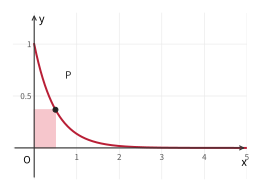
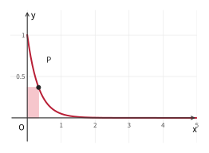
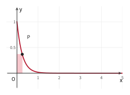

別冊練習問題 10 の解答 曲線上の点が作る長方形の面積の最大
(1) 曲線 \(y=e^{-2x}\ (x>0)\) 上の点 \(P\) から \(x\) 軸、\(y\) 軸に下ろした垂線と両軸が作る長方形の面積の最大値を求めよ。
面積を \(x\) の式で表す
\(P(x,\ e^{-2x})\)。長方形の横が \(x\)、縦が \(e^{-2x}\)。
\[S(x)=x\,e^{-2x}\ (x>0)\]
積の微分で \(S'(x)\) を求める
\((e^{-2x})'=-2e^{-2x}\)。
\[S'(x)=e^{-2x}+x\cdot(-2e^{-2x})\]\(e^{-2x}\) でくくる。
\[=(1-2x)e^{-2x}\]\(S'(x)=0\) を解く
\(e^{-2x}>0\) だから \(1-2x=0\)。
\[x=\dfrac{1}{2}\]増減表をかく
\(S'(x)\) の符号は \(1-2x\) と同じ。
| \(x\) | \(0\) | \(\cdots\) | \(\dfrac{1}{2}\) | \(\cdots\) |
|---|---|---|---|---|
| \(S'(x)\) | \(+\) | \(0\) | \(-\) | |
| \(S(x)\) | ↗ | 最大 | ↘ |
最大値を求める
\(x=\dfrac{1}{2}\) を代入。\(2x=1\) だから \(e^{-2x}=e^{-1}\)。
\[S(\dfrac{1}{2})=\dfrac{1}{2}\cdot e^{-1}=\dfrac{1}{2e}\]【答案】
\[\dfrac{1}{2e}\]答
(2) 曲線 \(y=e^{-3x}\ (x>0)\) 上の点 \(P\) から \(x\) 軸、\(y\) 軸に下ろした垂線と両軸が作る長方形の面積の最大値を求めよ。
面積を \(x\) の式で表す
\(P(x,\ e^{-3x})\)。長方形の横が \(x\)、縦が \(e^{-3x}\)。
\[S(x)=x\,e^{-3x}\ (x>0)\]
積の微分で \(S'(x)\) を求める
\((e^{-3x})'=-3e^{-3x}\)。
\[S'(x)=e^{-3x}+x\cdot(-3e^{-3x})\]\(e^{-3x}\) でくくる。
\[=(1-3x)e^{-3x}\]\(S'(x)=0\) を解く
\(e^{-3x}>0\) だから \(1-3x=0\)。
\[x=\dfrac{1}{3}\]増減表をかく
\(S'(x)\) の符号は \(1-3x\) と同じ。
| \(x\) | \(0\) | \(\cdots\) | \(\dfrac{1}{3}\) | \(\cdots\) |
|---|---|---|---|---|
| \(S'(x)\) | \(+\) | \(0\) | \(-\) | |
| \(S(x)\) | ↗ | 最大 | ↘ |
最大値を求める
\(x=\dfrac{1}{3}\) を代入。\(3x=1\) だから \(e^{-3x}=e^{-1}\)。
\[S(\dfrac{1}{3})=\dfrac{1}{3}\cdot e^{-1}=\dfrac{1}{3e}\]【答案】
\[\dfrac{1}{3e}\]答
(3) 曲線 \(y=e^{-4x}\ (x>0)\) 上の点 \(P\) から \(x\) 軸、\(y\) 軸に下ろした垂線と両軸が作る長方形の面積の最大値を求めよ。
面積を \(x\) の式で表す
\(P(x,\ e^{-4x})\)。長方形の横が \(x\)、縦が \(e^{-4x}\)。
\[S(x)=x\,e^{-4x}\ (x>0)\]
積の微分で \(S'(x)\) を求める
\((e^{-4x})'=-4e^{-4x}\)。
\[S'(x)=e^{-4x}+x\cdot(-4e^{-4x})\]\(e^{-4x}\) でくくる。
\[=(1-4x)e^{-4x}\]\(S'(x)=0\) を解く
\(e^{-4x}>0\) だから \(1-4x=0\)。
\[x=\dfrac{1}{4}\]増減表をかく
\(S'(x)\) の符号は \(1-4x\) と同じ。
| \(x\) | \(0\) | \(\cdots\) | \(\dfrac{1}{4}\) | \(\cdots\) |
|---|---|---|---|---|
| \(S'(x)\) | \(+\) | \(0\) | \(-\) | |
| \(S(x)\) | ↗ | 最大 | ↘ |
最大値を求める
\(x=\dfrac{1}{4}\) を代入。\(4x=1\) だから \(e^{-4x}=e^{-1}\)。
\[S(\dfrac{1}{4})=\dfrac{1}{4}\cdot e^{-1}=\dfrac{1}{4e}\]【答案】
\[\dfrac{1}{4e}\]答